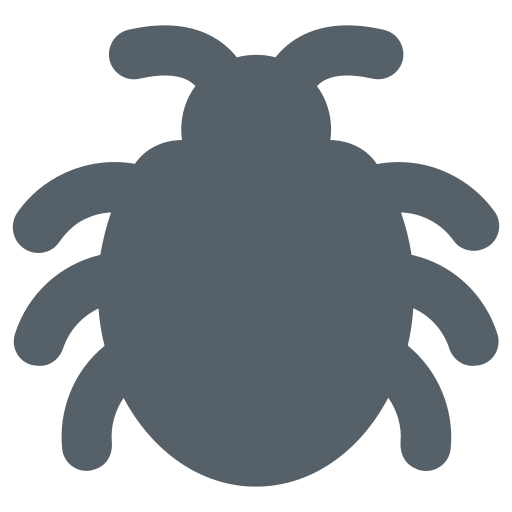

나를 이루는 것들
안녕하세요. 안양에서 자라 범계초, 범계중, 성문고를 졸업한 곽규리입니다.
저는 사람과 책, 그리고 바다를 좋아하는 사람입니다.
힘든 일이 생기면 누군가와 솔직하게 이야기하며 마음을 가볍게 만들기도 하지만,
책을 읽으며 나만의 속도로 생각을 정리하는 순간 또한
제가 다시 앞으로 나아갈 힘을 찾는 데 큰 역할을 합니다.
책 속 한 문장이 마음의 매듭을 풀어주는 경험을 자주 하는 편입니다.
그리고 저는 바다를 정말 좋아합니다.
넓게 펼쳐진 수평선을 보고 있으면 생각이 자연스레 비워지고,
고민들이 파도처럼 천천히 풀려 나가는 느낌이 들곤 합니다.
내가 싫어하는 것

벌레
나의 전공

소프트웨어공학과
내가 좋아하는 것

음악